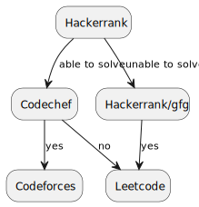

Data Structures and Algorithms:
Topics:
- Array
- Strings
- Time and Space Complexity
- Searching (Linear/Binary)
- Sorting (All Algorithms)
- Stack
- Queue
- Linked Lists (Singly and Double)
- Hashing
- Recursion
- Backtracking
- STL for C++
- Trees and BST
- Heaps/Priority Queue
- Graph
- Dynamic Programming
Coding Challenges Platform Heirarchy/Flow:

Methodology:
- Solve problems according to the schedule mentioned
- Give 20 minutes to easy questions
- Give 40 minutes to medium questions
- Give 60 minutes to hard questions
- Check hints if you are not able to solve in given time
- After that check the editorials
- Don't waste time in single problem for the whole day
Learning Resources:
- Data Structures - Full Course Using C and C++ - YouTube [Link]
- Programming, Data Structures And Algorithms Using Python - NPTEL [Link]
- Data Structures and Algorithms Specialization - Coursera [Link]